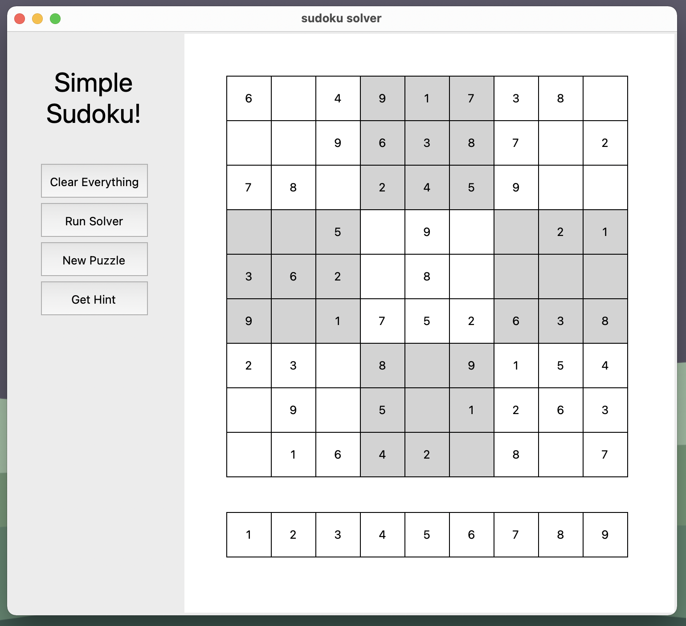

Katherine Brooks
Software Engineer
About Me:
Welcome to my website! I'm a sophomore in Computer Science at Penn State. I've got a passion for the aerospace industry and all things space. I'm a hardworking and driven student, but while I'm not doing homework I like to explore my ideas through pet projects. Each project is aimed to learn more about one topic or to prove I can build something. I hope you enjoy learning about what I've been working on.

An interactive Sudoku Plateform
Runs a recursive algorithm to solve each puzzle
Generates boards with an algorithm
Utilizes Python and Python's tkinter